BB 22200
véritables bicourantes
Les premières machines de vitesse bicourant, les BB 25200, eurent un début de carrière des plus prestigieux. Pour faire face à la hausse du trafic vers la Bretagne, la SNCF avait même dû commander quelques machines supplémentaires au début des années 1970. Elles étaient particulièrement fiables pour une série innovante. Leurs 45 ans de service prouvent une conception sérieuse. Mais, tout comme les machines purement continues des années 1960, elles avaient des faiblesses sur les lignes électrifiées en 1500 V. Le rhéostat mettait en difficulté les sous-stations antédiluviennes de la ligne Paris - Le Mans notamment, et limitait la puissance bien en deçà de ce que les mêmes locomotives pouvaient offrir en monophasé. Le développement des Hacheurs de courant permettait de développer une nouvelle génération de locomotives bicourantes développant 4 MW sous les deux systèmes.
Les BB 22200 sont les soeurs quasi-jumelles des BB 7200. Outre une esthétique identique à la toiture près, elles partagent la plupart de leurs organes en commun. Ainsi, alors que les BB MTE Bicourantes et les BB 25500 Alsthom avaient deux chaines de traction bien séparées qui n'avaient en commun que les moteurs de traction, les 22200 se présentent comme des BB 7200 dont le hacheur de courant est alimenté par un ensemble transformateur+redresseur quand la machine roule sous caténaire 25 kV 50 Hz. Sous caténaire continue, 22200 et 7200 fonctionnent rigoureusement de la même façon. D'un point de vue électrique, il est utile de rappeler que les BB 15000 ont en revanche une construction tout à fait différente à base de ponts redresseurs commandés.
150 exemplaires ont été construits de 1977 à l'automne 1980. Une sous-série de 28 machines supplémentaires sortait d'usine du printemps 1983 à l'hiver 1984. Enfin, une dernière commande livrée de Juillet 1985 à Juillet 1986 portait le nombre d'engins construits à 205. Cependant, la 22279 était déjà rayée des inventaires.
Les 22200 ont la même livrée que les 7200 : béton traversée d'une ligne brisée orange. Les premiers exemplaires sont sortis de construction avec un pare-brise fortement incliné semblable aux CC 6500, 72000, BB 15001 à 50, BB 7201 à 35. A partir de la BB 22227 les cabines sont donc plus spacieuses. Extérieurement, les BB 22200 sont reconnaissables par leurs archets étroits. Le pantographe monophasé a la particularité de se trouver en sens inverse (coude vers l'extérieur de la machine) afin de ménager un emplacement pour le disjoncteur haute tension installé en toiture.
Carrière
Les 22200 ont débuté leur carrière sur la ligne de la côte d'Azur d'où elles ont rapidement chassé les BB 25200 en tête des trains express et rapides. En revanche leurs moteurs auto-ventilés n'étaient pas adaptés aux trains de marchandises lourds. Il fallu attendre des essais de bogies à rapport 100 km/h (PV) pour spécialiser les BB 22201 à 22268 à cette tâche par échange de bogies avec les unités sortants d'usine. Les BB 22269 et suivantes étaient quant à elles équipées d'une ventilation forcée les rendant plus universelles. Les 22200 PV se sont cependant révélées peu satisfaisantes et le tonnage emporté par une 22200 GV à ventilation forcée était presque aussi bon qu'une PV auto-ventilée alors qu'elles étaient plus polyvalentes. Il fut jugé plus pertinent de réutiliser les bogies PV sous des 7200 aptes à l'UM. Les trente-huit BB 7343 à 7380 sont sorties de Belfort en 1982, aptes à 160 km/h et équipées de la ventilation forcée. Après leur marche de réception et leur mise en service, elle furent envoyées à Oullins qui a procédé à l'échange des bogies, du système de ventilation et des convertisseurs auxiliaires entre ces machines et les 22231 à 22268. L'électrification de la Maurienne a conduit à la commande des BB 7411 à 7440, aptes à l'UM et au freinage par récupération. De la même façon, ces machines sont sorties d'usine en 1984/85, aptes à 160 km/h et ont échangé bogies, ventilation et convertisseurs avec les 22201 à 22230.
La série était exploitée sur un large périmètre qui s'étalait de la Côte d'Azur au Lyonnais, la Bourgogne, la Franche-Comté et le Nord. Certains trains nocturnes atteignant des kilométrages très élevés sans relais : plus de 1300 km entre Quévy et Nice.
Pour l'électrification de l'étoile d'Angers en 1983, dix machines (22351 à 22360) furent commandées équipées d'un couple 200. La BB 22278 effectua les essais dès 1981 avec une rame d'UIC ex-Capitole puis assura le service commercial du Montaigne (Corail V200) et du TEE Aquitaine. Les 22200 s'installèrent à Rennes en 1983 et reprirent les trains les plus nobles de l'Ouest dont le TEE Jules Verne entre Paris et Nantes aux CC 72000.
La succession des BB 22200 était déjà en préparation : Les BB 26000 et TGV Atlantique à moteurs synchrones autopilotés. Après les expérimentations de MTE sur le prototype BB 10004, les deux futures BB 22379 et 22380 sortent d'usine sous les numéros BB 20011 et 20012 : Livrée spécifique, pantographes montés archets vers le centre et moteurs synchrones. La BB 22351 fut équipée d'un carénage en vue de tester l'aérodynamique des 26000.
A l'ouverture du Tunnel sous la Manche, en raison du retard dans la construction des Class 92, ce sont des BB 22200 qui ont pris en charge les trains de Fret entre le continent et Douvres. Afin de répondre à la réglementation Anglaise, les capots de ces machines furent peints en jaune, leur valant le surnom de "Yellow submachines". Les modifications concernaient également des dispositifs de protection incendie et de climatisation propres à l'exploitation dans le tunnel, ainsi que l'installation d'automates pour la marche en Unité Multiple et de la TVM 430 sur les machines menantes. La transformation commença en 1993 pour les BB 22399 à 22405. Machines menantes TTU équipées de TVM : 22399, 22401, 22403, 22405. Machines menées TU : 22400, 22402, 22404. Les prototypes 20011 et 20012 à moteurs synchrones furent à leur tour transformées en BB 22200 TTU sous les numéros 22379 et 22380. Le service commercial débuta en Juin 1994 pour s'achever fin 1995. Les machines TU ont alors été remises au type tandis que les TTU reçurent des bogies à rapport 200 km/h provenant des 22351 à 22360. Les BB 22379, 22380 et 22399 furent dédiées aux tournées d'inspection LGV (IES et Mauzin). Les autres machines prirent en charge les TER200 Interloire avant d'être mutées en 1997 à Villeneuve pour assurer les nouveaux MVGV, convois légers de la Sernam empruntant des portions de LGV à 200 km/h de nuit.
Dès lors, malgré les électrifications progressives vers Le Croisic, Grenoble, Brest, Quimper, Clermont-Ferrand, les BB 22200 ont peu à peu été réduites à un rôle plus discret. La poussée des BB 26000 et TGV a entamé leurs services sur les grandes relations et elles prennent davantage en charge des express interégionnaux ou des TER.
Depuis 2006, Oullins équipe plusieurs machines de la réversibilité par multiplexage. L'objectif est double. Pousser les BB 25200 Mux à la retraite et créer de nouveaux services. A cet effet, de nouvelles voitures pilote ont été mises en service par la transformation de voitures-fourgon Corail VU B6Du en B5uxh.
L'avenir est moins rose pour les machines dédiées au Fret. Suite à la régression du trafic et après avoir radié toutes les séries de machines plus anciennes, la direction de Fret a décidé de garer en bon état de nombreuses machines. L'amortissement de la série a tout de même débuté en 2012 avec la radiation de 18 locomotives appartenant toutes à la première sous-série à petites cabines. Parmi les sept machines à petites cabines rescapées, les 22218 et 22223 sont utilisées par l'activité Transilien pour les acheminements de matériel vers les technicentres. Elles sont repeintes en bleu Transilien.
Fin 2013, les radiations de machines Fret ont repris avec, cette fois-ci, des machines grandes cabines.
Certaines BB 22200 ont été modifiées pour les adapter à la réversibilité par câblots. Les "22200 RC" remplacent les BB 25500 sur la côte d'azur (16 locomotives) avec des RRR et en Nord-Pas de Calais (15 locomotives) avec des rames VR2N.
Quelques données techniques
Constructeur : Alsthom - Francorail
Tension d'alimentation : continu 1,5 kV et monophasé 25 kV, 50 Hz
Chaîne de traction : Hacheur/Pont redresseur à Thyristors - Moteurs continus
Motorisation : 1 moteur par bogie
Puissance totale : 4040 kW sous courant continu, 4140 kW sous monophasé
Longueur : 17,480 m
Masse : 90t
Pantographes : 1 AM18 U, 1 AM18 B à archets étroits
Dispositions particulières :
Les machines de l'Infra disposent de bogies à rapport V200 et de la TVM pour les tournées d'inspection des LGV avec la voiture Lucie : 22379, 22380, 22386, 22399, 22401, 22403, 22405.
48 machines sont équipées en multiplexage pour pousser en réversibilité à 160 km/h les rames Corail Rhône Alpes, Bourgogne/Franche-Comté et PACA.
Pour plus d'info :
La fiche BB 22200 sur Wikipedia
Fiche technique des BB 22200 de Florent Brisou
Les BB 22200 sur Trains d'Europe.
L'inventaire des BB 22200 sur Trains du Sud-Ouest
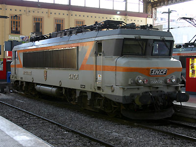
La BB 22393 encore plaquée à Marseille St Charles (18/07/2005)
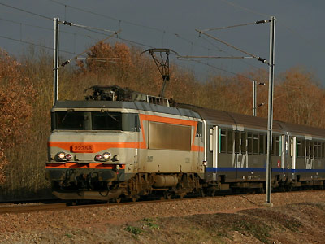
La BB 22358 sur un TER quitte Tours pour Nantes (27/12/2005)
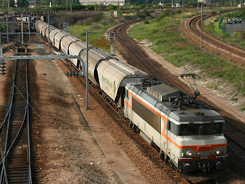
La BB 22372 à Sotteville (02/08/2005)
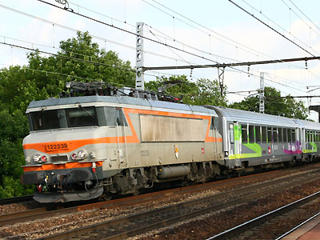
La BB 22239 à Brunoy au crochet d'un CIC Nevers-Paris Gare de Lyon (16/05/2010)
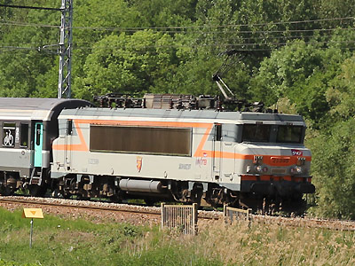
La BB 22399 Infra à Vauboyen (12/05/2011)
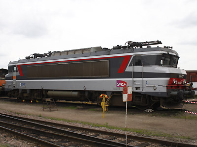
La BB 22347, prototype Multiservice à St Pierre des Corps (07/06/2008)
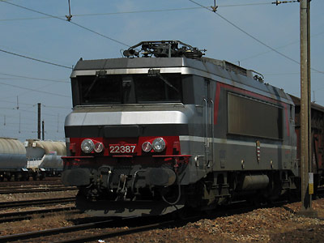
La BB 22387, Multiservice aux Aubrais (28/05/2004)
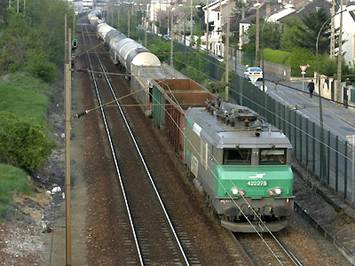
La BB 22275, rare 22200 en livrée Fret, à Argenteuil (21/04/2005)
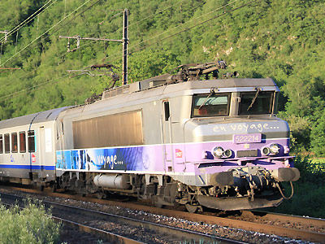
La BB 22214 à Torcieu, une des dernières "petites cabines" en service (03/07/2011)
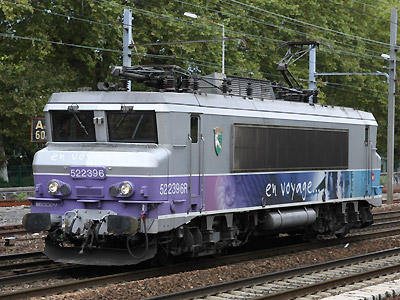
La BB 22396 manoeuvre à Chambéry (18/09/2010)
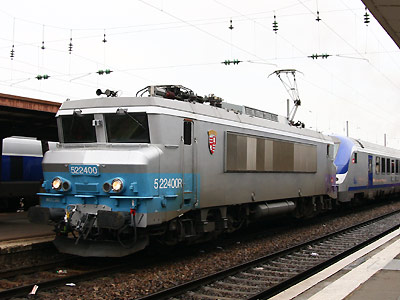
La fin de la livrée "En voyage" est brutale. La BB 22400 ne sera pas terminée Besançon (09/05/2010)
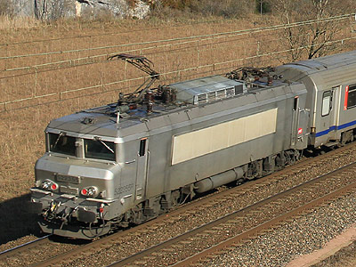
La BB 22355R fantôme à Virieu le Grand pousse un TER Rhone Alpes (20/09/2011)

La BB 22295 Infra à Boisseau (12/05/2014)
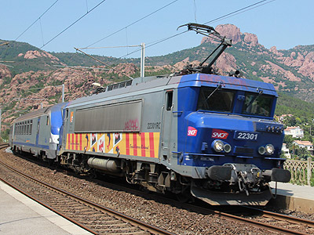
Prévue pour tirer-pousser une RRR, la BB 22301RC remplace une 22200R au crochet d'une rame Corail, sans réversibilité puisque les systèmes sont différents. Anthéor Cap-Roux (10/06/2014)